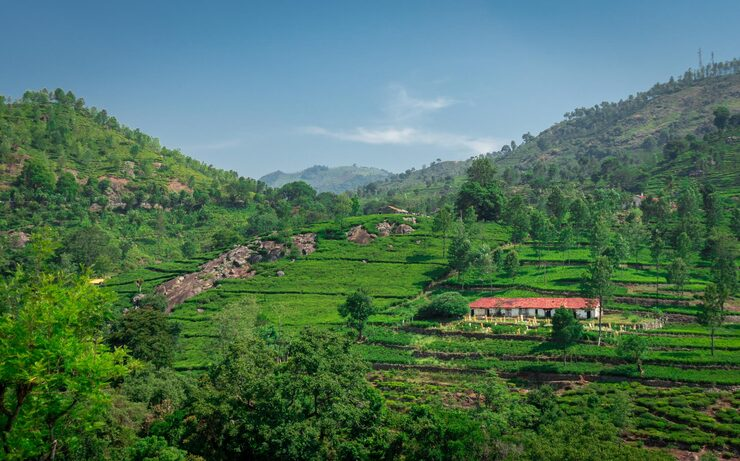

About Sholayar Dam

Sholayar Dam is one of the largest dams in the region, surrounded by forest and dramatic hills. The drive itself is one of Valparai's most scenic experiences.
A large reservoir surrounded by forest and hills

Sholayar Dam is one of the largest dams in the region, surrounded by forest and dramatic hills. The drive itself is one of Valparai's most scenic experiences.